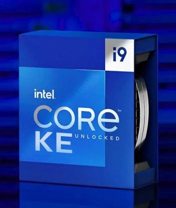

Descubre el nuevo procesador de Intel
El procesador Intel Core I9 14901TE utiliza la tecnología de fabricación Intel de 10nm, es para plataforma de escritorio, y se lanzó al mercado en julio de 2024. Presenta un diseño de 8 núcleos, lo que proporciona un total de 8 núcleos y 16 hilos de rendimiento. La frecuencia base es de 2.3GHz, y puede alcanzar una velocidad de reloj turbo máxima de 5.5GHz con un TDP de 45 W. El procesador cuenta con una caché L3 de gran tamaño de 36 MB. Además, cuenta con gráficos integrados. Utiliza el zócalo Intel Socket 1700
Compra Ahora
